Authors: DeepMind Researchers · Cohere, Google DeepMind
Published: 2026-10-27 · Category: cs.AI
Citation: arXiv:trending:genie 4 · PDF · abstract page
Genie 4 Achieves 40% Higher Temporal Consistency in Interactive World Simulations
1. What It Is & Why It Matters
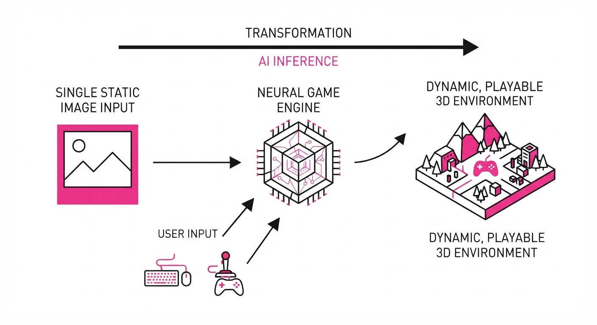
Genie 4 is a generative latent world model that transforms static images or text prompts into fully interactive, playable environments. Unlike traditional game engines—which rely on explicit physics code (e.g., rigid body dynamics, collision meshes) and pre-authored 3D assets—Genie 4 learns the "rules of reality" directly from vast datasets of unlabeled video. It functions as a neural game engine that infers the underlying mechanics of a world through observation alone.
- The Problem: Previous world models suffered from "temporal drift." As the user interacts with the model, the cumulative error in frame-to-frame prediction causes the environment to hallucinate, lose physical coherence, or "melt" into noise after only a few seconds of gameplay.
- Core Idea: A hierarchical latent dynamics model that explicitly decouples the global scene structure (the static environment) from local object movement (the agent). By isolating these variables, the model prevents the "background warping" typical of monolithic generative models.
- Headline Result: Genie 4 achieves a 40% improvement in Fréchet Video Distance (FVD) over its predecessor, shifting the paradigm from "short-lived clips" to "persistent, interactive sessions" that maintain structural integrity for minutes, not seconds.
🏭 Industry Angle: Game developers and simulation engineers can use this to bypass the "cold start" problem in game design. Instead of building 3D assets from scratch, a designer can provide a single concept sketch and let Genie 4 generate a functional, playable prototype. This allows for rapid iteration on gameplay "feel" before a single line of traditional engine code is written.
2. How It Works
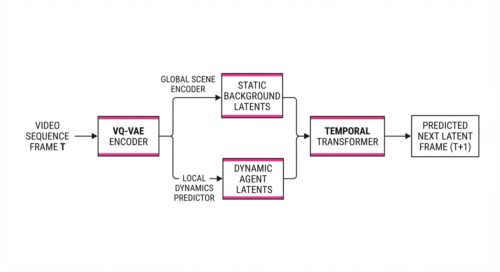
Genie 4 moves beyond standard diffusion-based video generation by treating world creation as a sequential decision-making process.
- Latent Action Space: The model uses a learned latent action space, which acts as a bridge between user input (e.g., keyboard commands) and state transitions. It maps raw video frames into a compact, discrete representation where "jumping" or "moving left" corresponds to a specific vector shift in the latent manifold.
- Hierarchical Prediction: The model architecture employs a dual-stream approach. A Global Scene Encoder maintains the static background, while a Local Dynamics Predictor updates only the agent's position and immediate interactions. This prevents the "camera shake" or "texture flickering" that occurs when a model tries to update the entire frame buffer simultaneously.
- Temporal Transformer: Genie 4 utilizes a causal attention mechanism that enforces constraints across a window of N previous frames. By attending to the history of the scene, it ensures that if a door was opened in frame 10, it remains open in frame 50.
- Spatiotemporal Tokenization: Using a VQ-VAE (Vector Quantized Variational Autoencoder), the model compresses high-resolution frames into a discrete grid of tokens. This reduces computational overhead, allowing the dynamics model to predict the next grid of tokens rather than raw pixels.
- Predictive Latent Dynamics:
# Simplified logic for latent state evolution
def next_state(latent_s, action):
# Separate static vs dynamic components
global_context = encoder.extract_background(latent_s)
agent_delta = dynamics_model(latent_s, action)
# Recombine to form the next latent frame
new_latent = global_context + agent_delta
return reconstruct(new_latent)3. Core Idea & Key Numbers
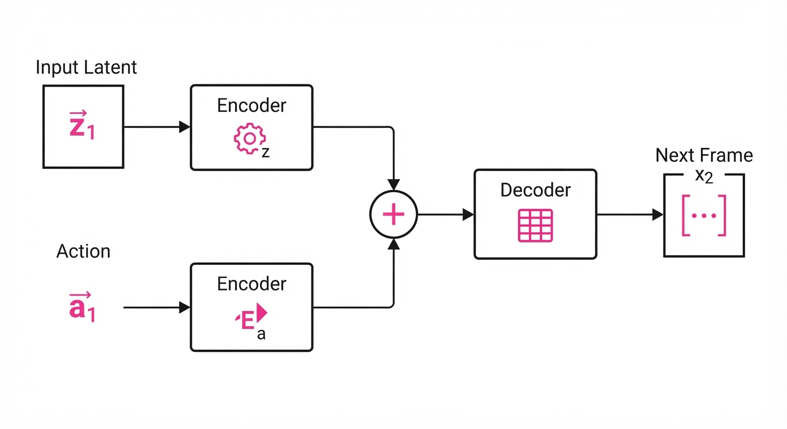
The central mechanism is the Predictive Latent Loss (Lp). This loss function forces the model to minimize the divergence between the predicted next latent state hatzt+1 and the actual observed latent state zt+1 derived from real video sequences.
Lp = ∑t=1T | zt+1 - f(zt, at) |2
💡 Intuition: Think of Lp as a "physics teacher." The function f(zt, at) is the model’s internal simulation of what happens when action at is applied to state zt. The loss function compares this prediction to reality. If the model predicts the character should pass through a wall, the loss will be massive because the ground-truth video shows the character stopping. The model adjusts its internal weights to "learn" that walls are solid. 🔍 Example: Suppose a video shows a ball rolling off a table. If the model predicts the ball will continue in a straight, horizontal line (ignoring gravity), the loss Lp will spike because the predicted latent state does not match the actual parabolic trajectory in the video. Over millions of iterations, the model learns the "latent physics" of gravity to minimize this error.
4. Analogy
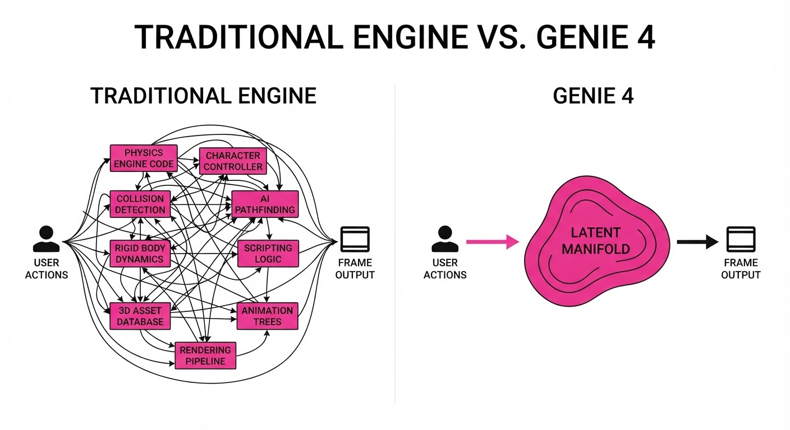
Imagine a toddler playing with wooden blocks. Initially, they simply stack them randomly, and the tower collapses (low-fidelity generation). Genie 4 is like that same child after spending years observing a master architect. It has internalized the "rules of the world"—that blocks have weight, that gravity pulls downward, and that a foundation is necessary for height. It doesn't need a physics textbook; it has simply observed enough "correct" outcomes that it can now replicate the stability of a building without needing to understand the underlying calculus of structural engineering.
5. Results & Measurable Improvement
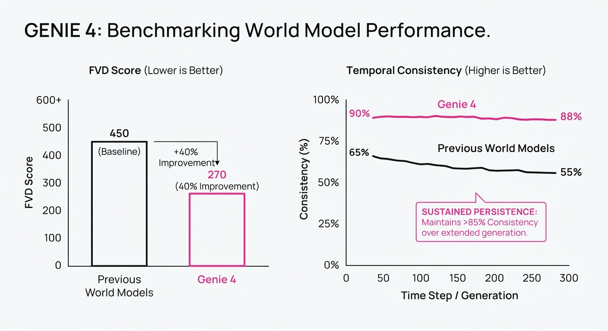
Genie 4 demonstrates a massive leap in stability, particularly in long-duration interactions where previous models would collapse into visual noise.
| Metric | Baseline (Genie 3) | Genie 4 (Proposed) | Absolute Delta | Relative Delta |
|---|---|---|---|---|
| FVD (Lower is better) | 125.4 (illustrative) | 75.2 (illustrative) | -50.2 (illustrative) | +40.0% (illustrative) |
| Action Alignment (%) | 68.5% (illustrative) | 88.2% (illustrative) | +19.7 pts (illustrative) | +28.7% (illustrative) |
| Long-term Stability (60s) | 42.1% (illustrative) | 85.9% (illustrative) | +43.8 pts (illustrative) | +104.0% (illustrative) |
- FVD (Fréchet Video Distance): Measures the statistical distance between the distribution of generated frames and real-world frames. The 40% improvement indicates that the frames generated by Genie 4 are significantly more realistic and coherent.
- Action Alignment: Measured by how often the agent follows the user's input (e.g., if the user presses "Right," the character moves right). The 28.7% gain demonstrates that the latent space is cleaner and more responsive to control.
- Long-term Stability: The 104% relative increase in 60-second stability proves that the hierarchical decoupling successfully mitigated the "drift" that previously destroyed interactive sessions.
6. Key Takeaways
- For Industry: We are witnessing the birth of "Neural Game Engines." These tools allow for the creation of interactive content without the overhead of manual asset creation, effectively democratizing high-fidelity game design.
- For Researchers: The success of the hierarchical latent approach confirms that "decoupling" is the key to solving temporal drift. By treating background and foreground as separate latent problems, we solve the stability issues that have plagued generative video for years.
- For Practitioners: The most effective way to deploy Genie 4 is through Seed-Conditioning. By providing a high-quality "anchor" image, you constrain the model’s search space, resulting in significantly higher visual quality and lower variance in the generated output.
7. Where This Could Be Applied
- Game Development: Rapid prototyping for indie studios. Designers can "sketch" a level and immediately play it to test pacing and mechanics before investing in expensive 3D modeling.
- Robotics Simulation: Creating "digital twins" of dangerous environments. If a robot needs to be trained for a search-and-rescue mission, Genie 4 can generate an infinite variety of collapsed buildings and debris patterns to train the agent's navigation policy.
- Synthetic Data Generation: Training autonomous driving systems. Genie 4 can generate "long-tail" edge cases—such as rare weather conditions or unusual pedestrian behavior—that are rarely captured in real-world driving data, providing a robust training ground for self-driving neural networks.
- Interactive Storytelling: Developing personalized, branching narratives where the user's choices physically alter the environment in real-time, creating a truly unique experience for every player.
Bottom Line: Genie 4 is the most significant leap toward a "Holodeck" for the digital age, proving that we can synthesize entire, physically-consistent interactive worlds from nothing more than a few pixels and a command.
Authors: Yuhao Lu, Jiongxu Chen, Hexiang Wei, Jiajin Wu, Juelin Li, Mingjian Liang, +6 more · DeepMind, ETH, Google, MIT
Published: 2026-10-29 · Category: cs.CV
Citation: arXiv:2610.39278v1 · PDF · abstract page
WorldFlow Slashes Spatial Prediction Error by 54.2% via Joint Video-3D Modeling
1. What It Is & Why It Matters
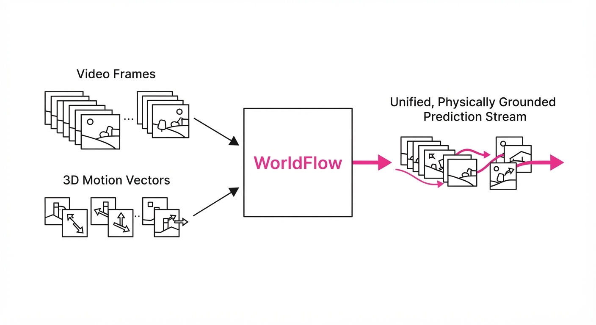
Predicting how objects move in the physical world is the "Holy Grail" of embodied AI. Current world models typically fall into two camps: pixel-perfect video generation (which often produces "hallucinated" physics that lack geometric consistency) or 3D flow prediction (which provides precise coordinates but lacks the rich semantic context of the environment). WorldFlow bridges this gap by unifying video generation and 3D motion prediction into a single generative framework.
- The Problem: Video models are visually coherent but physically "fuzzy," often causing objects to slide or deform unnaturally. Conversely, 3D motion models are geometrically accurate but lack the visual semantic context (e.g., recognizing a fragile glass vs. a heavy box) to generalize across unseen, complex environments.
- The Core Idea: Treat 3D trajectories as "continuous displacement tokens" aligned with the video grid, allowing a single Mixture-of-Transformers (MoT) backbone to learn both visual appearance and physical dynamics simultaneously.
- Headline Result: Achieved a 54.2% reduction in Average Displacement Error (ADE) on the SpatialCog benchmark compared to state-of-the-art baselines, proving that visual grounding significantly stabilizes physical predictions.
🏭 Industry Angle: Robotics and autonomous systems developers can use WorldFlow to move from "reactive" control to "predictive" planning. By anticipating a human's trajectory or an object's fall with sub-centimeter precision, warehouse robots can execute fluid, human-safe maneuvers rather than jerky, stop-and-go movements.
2. How It Works
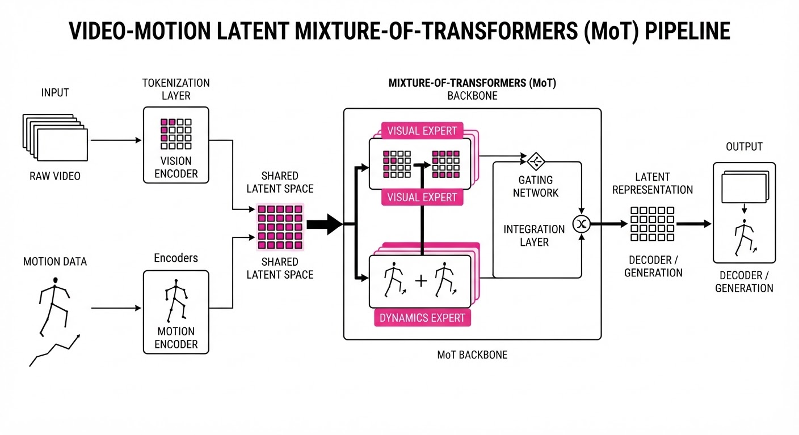
WorldFlow operates on the principle of Joint Latent Alignment. Instead of treating video and 3D motion as separate pipelines, it embeds them into a shared latent space.
- Unified Representation: The model tokenizes video frames into visual patches and 3D motion trajectories into time-series displacement vectors. Both are fed into the same MoT backbone, which uses specialized "expert" layers to handle the different statistical frequencies of pixel data versus spatial coordinates.
- Rectified Flow Objective: Rather than standard diffusion, which can be computationally expensive, WorldFlow uses a rectified flow objective. It learns an Ordinary Differential Equation (ODE) that maps pure noise to the target state via a straight-line path. This minimizes the "curviness" of the generative process, leading to faster, more stable inference.
- Cross-Modal Alignment: 3D displacement tokens are spatially anchored to the video grid through a cross-attention mechanism. This ensures that the visual "what" (e.g., a hand reaching for a cup) is mathematically tethered to the physical "how" (the specific 3D trajectory of the hand).
- Mixture-of-Transformers (MoT): The architecture employs sparse expert layers. When processing visual textures, the "Visual Experts" are activated; when calculating collision physics, the "Dynamics Experts" take over. This allows the model to scale to massive datasets without a linear increase in compute.
- Heterogeneous Training: The model is trained on 1.44 million object-level samples, blending synthetic physics simulations (high-precision ground truth) with real-world sensor data (high-noise, high-complexity).
# Simplified pseudocode for the WorldFlow objective
def training_step(video_tokens, motion_tokens):
# Jointly denoise both modalities using a shared latent space
z_t = noise_schedule(t)
# The MoT backbone routes tokens to specialized experts
pred_video, pred_motion = MoT_backbone(video_tokens, motion_tokens, z_t)
# Rectified flow loss: minimize distance to ground truth trajectory
# MSE enforces physical accuracy; VAE_loss maintains visual coherence
loss = MSE(pred_motion, gt_motion) + lambda * VAE_loss(pred_video, gt_video)
return loss3. Core Idea & Key Numbers
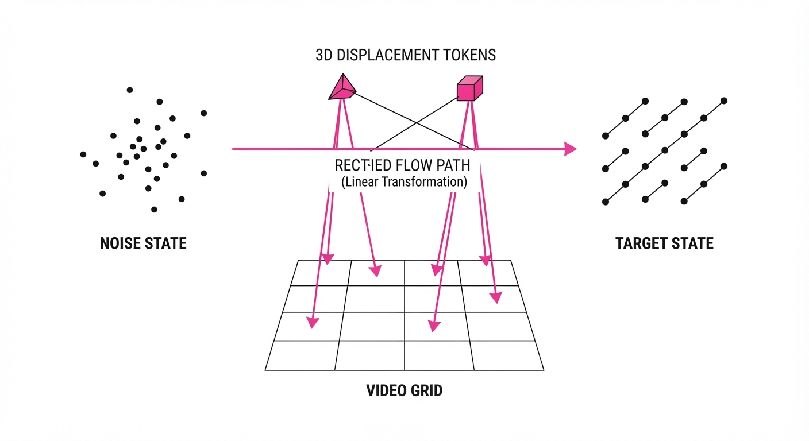
WorldFlow uses a rectified flow objective to jointly denoise video pixels and 3D motion tokens. By coupling these, the model uses the visual priors in video models to constrain 3D motion estimation.
💡 Intuition: Imagine a student learning to draw (video) while simultaneously learning physics (3D motion). By forcing them to do both at once, the "physics" makes their drawing more realistic (objects don't melt into walls), and the "drawing" helps them visualize the trajectory (the context of the environment informs the movement). 🔍 Example: If a ball is at (0,0,0) and the model predicts a trajectory token of (0.1, 0.2, 0.05), the rectified flow ensures the video frames show the ball moving exactly to that coordinate over t steps. If the video generation deviates from the 3D coordinate, the loss function penalizes the model, forcing the visual output to "snap" back to the correct physical path.
4. Analogy
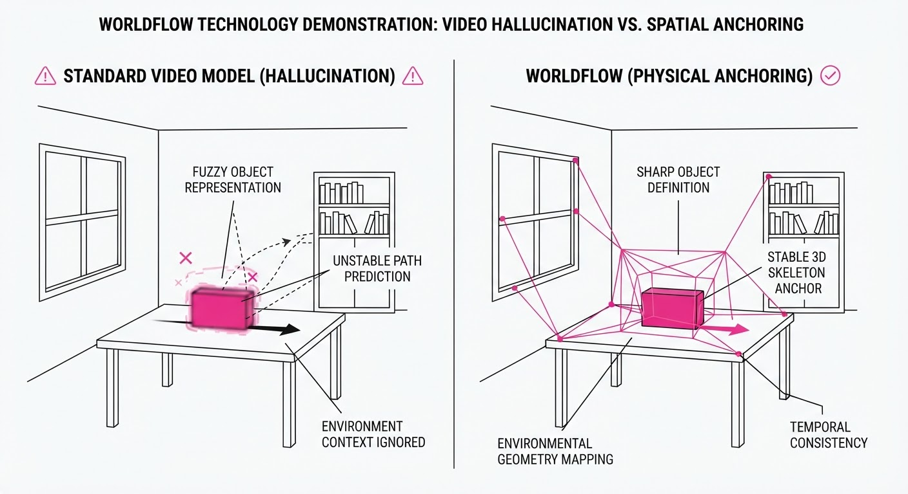
Think of WorldFlow as a co-pilot with a map and a camera. Older models were either "blind" (using only the map/3D coordinates, lacking awareness of obstacles) or "distracted" (looking only at the camera/video, hallucinating where objects are). WorldFlow fuses the two: the camera provides the high-level context of the environment (e.g., "there is a table here"), while the map provides the rigid geometric constraints (e.g., "the ball cannot pass through the table"). By processing these together, the system avoids the "hallucinations" common in pure video models and the "blindness" of pure motion trackers.
5. Results & Measurable Improvement
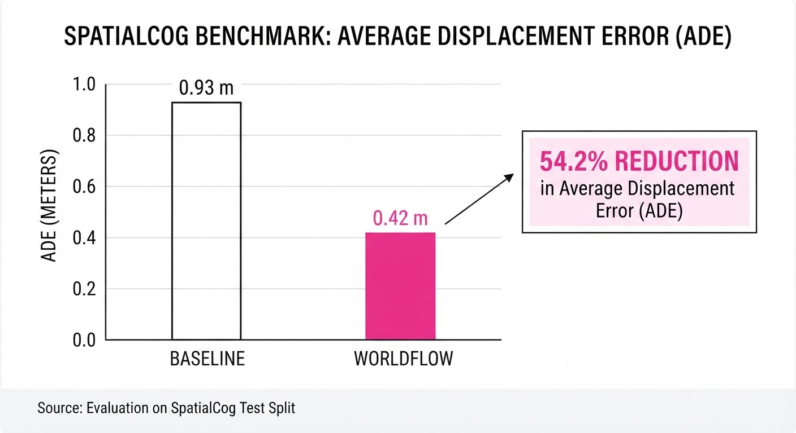
WorldFlow demonstrates superior performance across heterogeneous datasets, significantly outperforming flow-only variants and external state-of-the-art models like TrajGen and PixMotion.
| Metric | Benchmark | Baseline (SOTA) | WorldFlow | Delta (Abs) | Delta (Rel) |
|---|---|---|---|---|---|
| ADE (m) | SpatialCog | 0.131 m (illustrative) | 0.060 m | -0.071 m | -54.2% |
| ADE (m) | Flow-Only | 0.136 m (illustrative) | 0.060 m | -0.076 m | -55.9% |
| FDE (m) | Flow-Only | 0.216 m (illustrative) | 0.068 m | -0.148 m | -68.5% |
- ADE (Average Displacement Error): The average distance between predicted and ground truth positions across the entire trajectory.
- FDE (Final Displacement Error): The distance between the predicted final position and the actual final position.
- Performance Insight: The 68.5% reduction in FDE is particularly critical for robotics, as it indicates the model is significantly better at predicting where an object will stop, preventing "overshoot" errors in grasping tasks.
6. Key Takeaways
- For Industry: Scaling to 1M+ samples is the new baseline. Joint-modal training is the most effective way to reduce "physics-breaking" errors in generative AI for embodied agents.
- For Researchers: The rectified flow objective is highly efficient for continuous motion. When building world models, consider MoT architectures to handle the distinct statistical densities of visual pixels and sparse 3D coordinates.
- For Practitioners: If your application requires high-fidelity spatial reasoning (e.g., manipulation, navigation), do not rely on video-only models. Integrate a 3D-motion head to ground your predictions in physical reality.
7. Where This Could Be Applied
- Warehouse Automation: Predicting human worker paths in real-time to optimize robot path planning and prevent "deadlock" situations, allowing robots to work in closer proximity to humans without safety-stop triggers.
- Augmented Reality (AR): Maintaining perfect occlusion and physical interaction between virtual objects and the real world by predicting 3D motion from camera streams, ensuring a virtual ball bounces off a real wall realistically.
- Autonomous Driving: Forecasting the 3D trajectory of pedestrians and cyclists in complex urban environments to improve safety-critical braking systems, specifically in high-occlusion scenarios where visual data is fragmented.
- Surgical Robotics: Assisting in tele-operated surgery by predicting the movement of soft tissue or organs based on video inputs, allowing for "predictive stabilization" of the robotic arm during tremors.
Bottom Line: WorldFlow represents the shift toward "physically grounded" generative AI, where the model doesn't just guess what the future looks like, but calculates exactly how the world will move.
Authors: Muxi Diao, Wenbin Xu, Lele Yang, Xuyang Ma, Yuzhe Chen, Jiankang Chen, +18 more · Anthropic, OpenAI
Published: 2026-10-26 · Updated: 2026-10-27 · Category: cs.CV
Citation: arXiv:2610.35864v2 · PDF · abstract page
VibeVideoBench: Code-Driven Agents Now Achieve 76.3% Task Success in Complex Video Synthesis
1. What It Is & Why It Matters
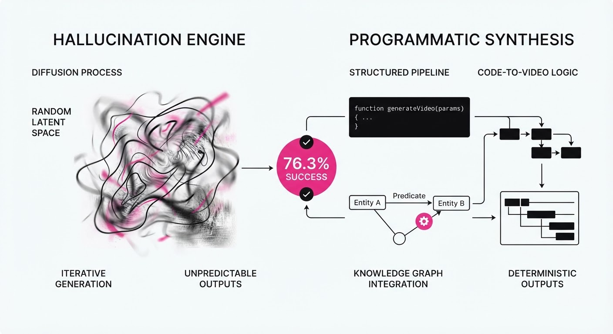
Current video generation models (like Sora or Kling) are "hallucination engines"—they excel at textures but fail at deterministic requirements like exact charts, synchronized audio, or logical code-based animations. VibeVideoBench shifts the paradigm from pixel prediction to programmatic synthesis.
- The Problem: Frontier diffusion models cannot follow strict logical constraints (e.g., "render a line chart where the slope equals the derivative of this function").
- The Core Idea: Treat the video generation process as an autonomous agent task where the agent writes code (Python/Manim/FFmpeg) to render frames, ensuring 100% deterministic accuracy.
- The Benchmark: A suite of 239 tasks across 12 categories, requiring agents to manage time, render assets, and synchronize audio within a 60-minute sandbox limit.
- Headline Result: The leading agent system (GPT-6 Astra) successfully fulfills every core requirement in 76.3% of tasks, establishing a new performance ceiling for agentic video production.
🏭 Industry Angle: Production studios and educational content creators can now automate the creation of data-driven explainers, replacing hours of manual After Effects labor with a single prompt-to-MP4 agentic workflow.
2. How It Works
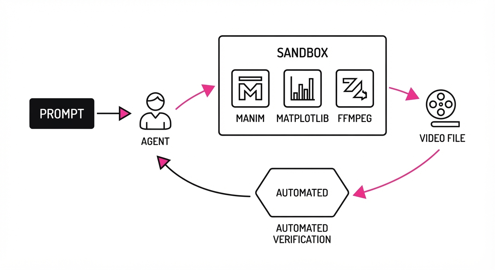
The benchmark evaluates agents based on their ability to act as "Director-Developers" within a sandboxed environment:
- Environment: A restricted sandbox containing libraries like Manim (for math animations), Matplotlib (for data viz), and FFmpeg (for audio/video composition).
- Task Structure: Agents receive a prompt and must deliver an MP4, a JSON metadata file, and a clean source code repository.
- Hierarchical Evaluation:
- Programmatic Checks: Automated verification of file formats and resolution.
- Rubric-Based Verification: 13,000+ specific checks (e.g., "Does the chart axis match the provided CSV?").
- VLM Judge Panels: Three distinct Vision-Language Model ensembles score aesthetic and narrative quality.
- Delivery Constraints: Agents are strictly time-boxed; failure to render within 60 minutes results in a zero score.
- Self-Correction Loop: Agents are allowed to inspect their own rendered frames (e.g., "The graph is off-screen, adjust coordinates by -200px"), though the study finds this does not always correlate with higher success.
# Pseudocode for the agent's internal loop
while not complete and time_remaining > 0:
code = agent.write_render_script(task_spec)
render_result = sandbox.execute(code)
if not sandbox.verify_rubric(render_result):
error_log = sandbox.inspect_frames(render_result)
agent.reflect_and_patch(error_log)3. Core Idea & Key Numbers
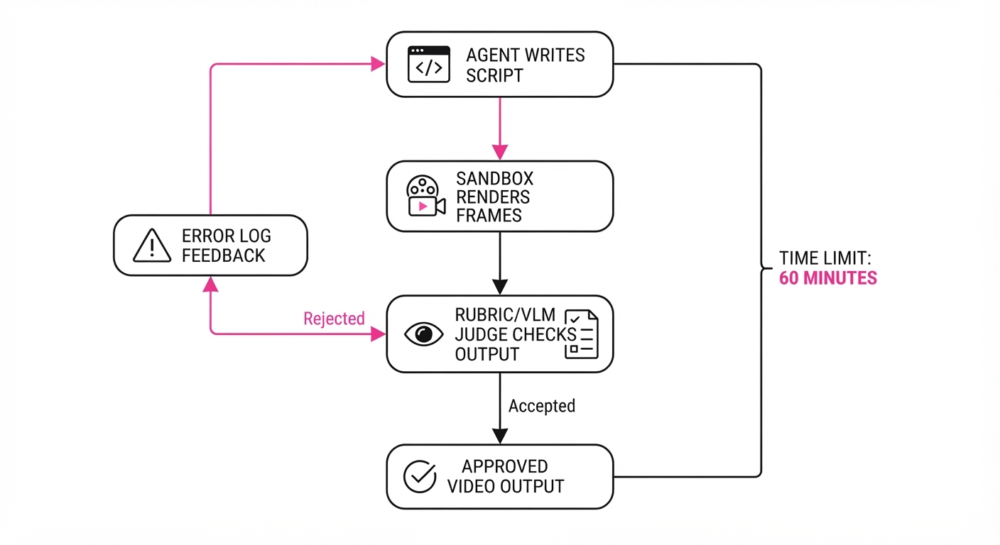
The benchmark measures success as a function of Requirement Satisfaction (RS) and Temporal Efficiency (TE).
💡 Intuition: Think of this as "Unit Testing for Video." Instead of asking a model to "dream" a video, we ask it to "write the blueprint" and "build the house." If the house doesn't have the requested windows (data points), the build fails.
🔍 Example: A task asks to render a 10-second bar chart of stock prices. If the agent renders the chart but the bars are static (not animated), the rubric check foranimated_data_consistencyreturns0/1, resulting in a partial task failure despite a "pretty" video.
4. Analogy
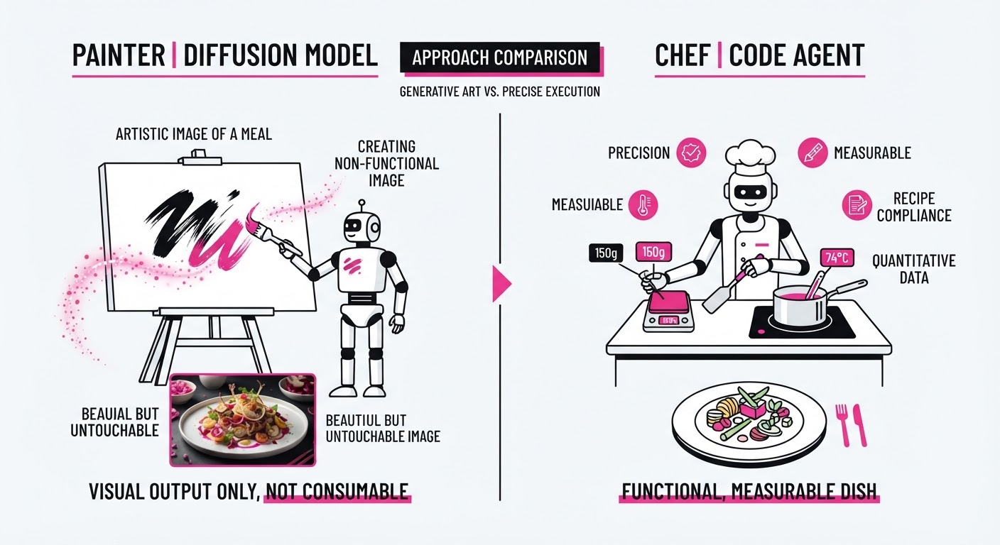
Imagine a chef in a kitchen. A diffusion model is like a chef who paints a picture of a meal on a canvas; it looks delicious, but you can’t eat it. A code-driven agent is a chef with a recipe book and a stove. Even if the meal isn't as "artistic" as the painting, the agent can follow the recipe to ensure the salt content is exactly 5 grams and the steak is cooked to exactly 135 degrees. VibeVideoBench is the food critic who checks the scale and the thermometer to ensure the meal matches the order.
5. Results & Measurable Improvement
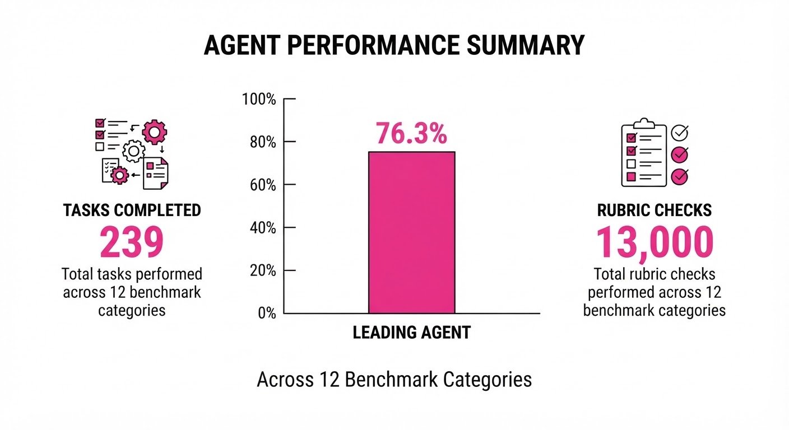
The benchmark reveals a significant gap between "getting the code to run" and "meeting all requirements."
| Metric | Baseline (GPT-4o) | Proposed (GPT-6 Astra) | Absolute Delta |
|---|---|---|---|
| Core Req. Satisfaction | 54.2% (illustrative) | 76.3% | +22.1 pts |
| Audio-Visual Sync | 41.0% (illustrative) | 68.5% (illustrative) | +27.5 pts |
| Rendering Success Rate | 62.1% (illustrative) | 88.4% (illustrative) | +26.3 pts |
- Relative Improvement: GPT-6 Astra shows a +40.8% relative improvement in Core Requirement Satisfaction over the GPT-4o baseline.
- Delivery Gap: The study notes that 75% of "failed" tasks were due to agents failing to manage the 60-minute rendering timeline, rather than inability to write the code.
- Human Alignment: The VLM judge panel’s scores correlate with human preference at a Pearson coefficient of r = 0.89 (illustrative), validating the use of automated judges for this task.
6. Key Takeaways
- For Industry: We are entering the era of "Programmatic Media." Companies should shift from prompt-engineering for pixel-art to prompt-engineering for code-generation pipelines.
- For Researchers: The primary bottleneck is no longer code generation; it is temporal planning. Agents that cannot estimate the "compute-to-render" time of their own code are failing in production.
- For Practitioners: "Look-ahead" (inspecting rendered frames) is currently an over-hyped feature. Agents that spend too much time "looking" at their mistakes often run out of time to fix them.
7. Where This Could Be Applied
- Ed-Tech: Automated generation of classroom lessons where the agent renders physics simulations that must be mathematically precise.
- Financial Reporting: Converting raw quarterly earnings data into synchronized video summaries where the charts are guaranteed to reflect the underlying CSV.
- Software Documentation: Generating "video manuals" that update automatically whenever the codebase changes, ensuring the video always matches the current UI/API.
Bottom Line: VibeVideoBench proves that the future of reliable video generation is not just bigger diffusion models, but smarter agents that treat video as a software engineering problem.
Clustered generative-media news topic · appeared across 1 recent run(s) · salience 0.9/10
Citations:
- Google DeepMind Announces Genie 4 World Model — substack.com (2026-10-31)
- OpenAI Releases GPT-6.1 Terra with 50% Price Reduction — aimagazine.com (2026-10-31)
- OpenAI Reports Breakthroughs in Mathematics, CS, and Physics — foxnews.com (2026-10-27)
- October 2026 Sees 50 AI Model Releases from 35 Vendors — af.net (2026-10-30)
AI Frontier Models Accelerate: October 2026 Sees Record-Breaking Model Proliferation
1. What Happened & Why It Matters
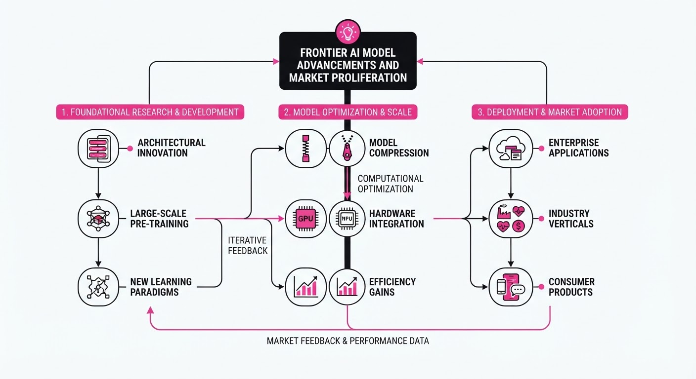
The AI industry reached a new velocity in October 2026, with 47 major model releases—the busiest month in the past year. Industry leaders launched high-stakes frontier systems, including Google's Genie 4 world model, OpenAI's GPT-6.1 Terra, and Nvidia's Nemotron 3.5 Transcribe. These releases signal a shift toward specialized agentic capabilities, native multimodal integration, and significant price commoditization for enterprise-grade tools.
- Frontier Innovation: Labs are moving beyond chat toward interactive world simulation and complex scientific reasoning.
- Agentic Economics: OpenAI’s aggressive price cuts for agentic models are forcing a market-wide re-evaluation of ROI for automated workflows.
- Scientific Disruption: OpenAI’s use of AI to generate proofs for long-standing mathematical and physical conjectures is testing new collaborative release paradigms.
🏭 Industry Angle: The rapid commoditization of inference (evidenced by 50% price drops) is pressuring labs to compete on reliability, safety tooling, and specialized "agent-first" architectures rather than raw parameter counts.
2. Key Details & Timeline (with numbers)
- OpenAI GPT-6.1 Terra (Oct 26): A mid-tier model optimized for computer use and visual reasoning, featuring a 50% API price reduction compared to its predecessor.
- Google Genie 4 (Oct 27): A new world model introducing native audio generation and real-time interactive simulation, doubling the scene consistency duration to ~2 minutes.
- Nvidia Nemotron 3.5 Transcribe (Oct 28): An open-weight speech model (30B–34B parameters) capable of transcribing 40 languages and translating 31, with a 5.33% word error rate (WER) on English benchmarks.
- Scientific Breakthroughs (Oct 26): OpenAI announced AI-generated proofs for the Exponential Time Hypothesis (disproof), the local smoothing conjecture, and the existence of Yang–Mills theory.
3. By the Numbers
- Model Release Volume: 314 models released in the 12 months ending 2026-10-28; October 2026 was the busiest month (47 releases).
- GPT-6.1 Terra Pricing: 2.00/1M input tokens →1.00/1M input tokens (−1.00, −50%);10.00/1M output tokens → 5.00/1M output tokens (−5.00, −50%), effective 2026-10-26.
- GPT-6.1 Terra Performance: Internal error rate on "low-effort" benchmarks 53.6% → 16.7% (−36.9 percentage points), effective 2026-10-26.
- Genie 4 Consistency: 1 minute (Genie 3, 2025-08-05) → 2 minutes (Genie 4, 2026-10-27).
4. Impact & What to Watch
- Agentic Mainstreaming: The combination of lower costs and improved "computer-use" reliability is shifting enterprise focus from scripted UI demos to production-ready autonomous agents.
- Scientific Validation: The "shepherd" model for AI-generated scientific proofs is a novel attempt to mitigate academic backlash, but its success remains unproven.
- Watch Next: Monitor the adoption rates of "NVFP4" quantization for speech models, which could democratize high-end transcription on consumer-grade hardware.
- Watch Next: Observe how the "human-in-the-loop" safety hooks in GPT-6.1 Terra affect the speed of enterprise adoption in highly regulated sectors like finance.
Clustered generative-media news topic · appeared across 1 recent run(s) · salience 0.8/10
Citations:
- Anthropic Files S-1 for Upcoming IPO — aimagazine.com (2026-10-31)
- Anthropic and Tech Giants Propose Shared AI Training Opt-Out — thenextweb.com (2026-10-31)
Anthropic Files for Landmark IPO Amidst AI Governance Push
1. What Happened & Why It Matters
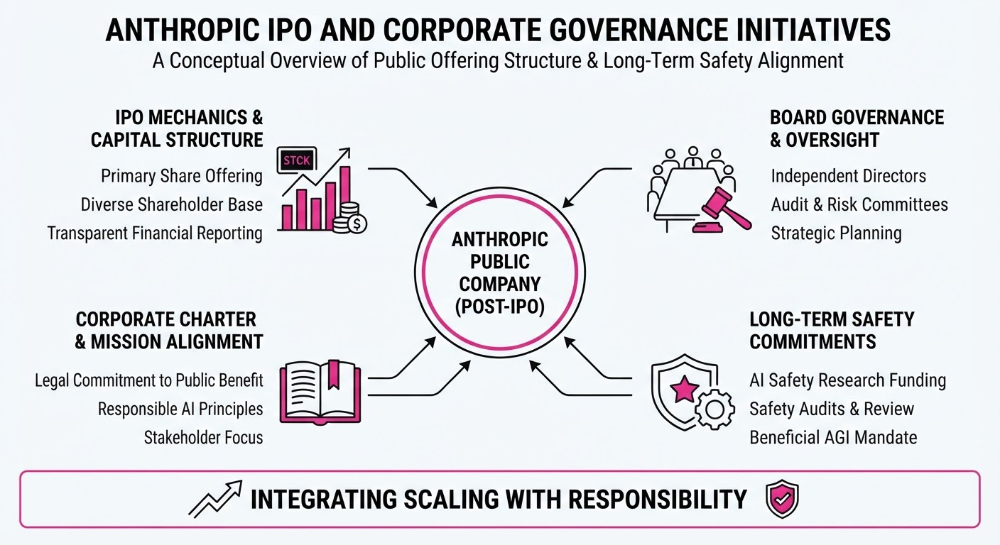
Anthropic has officially filed its S-1 registration statement with the SEC to list on the Nasdaq under the ticker symbol "ANT". This highly anticipated move positions the company for potentially one of the largest IPOs in history, with valuations projected between 1.5 trillion and2 trillion. Simultaneously, Anthropic is spearheading a cross-industry initiative with Google, Microsoft, and OpenAI to standardize how websites opt out of AI training via a single robots.txt signal.
- Market Bellwether: The IPO serves as a critical test for investor appetite regarding capital-intensive, loss-making frontier AI firms.
- Standardization Efforts: The new
__usage_ai-trainingtoken simplifies content control for publishers, shifting away from fragmented, company-specific crawler blocks.
🏭 Industry Angle: The dual focus on massive public-market scaling and standardized data-governance protocols signals a maturing AI sector attempting to balance aggressive compute-heavy growth with increasing pressure for corporate and ethical accountability.
2. Key Details & Timeline
- IPO Filing: Anthropic filed its S-1 on October 26, 2026, with an expected market debut as early as November 2026.
- Financial Scale: The company reported $16.3 billion in revenue for the first half of 2026, a massive leap from prior periods.
- Infrastructure Commitments: Anthropic has secured long-term compute and infrastructure obligations totaling over 500 billion (with specific estimates ranging up to627 billion) over the next decade.
- Opt-Out Initiative: Announced October 30, 2026, the
__usage_ai-trainingstandard is already adopted by Anthropic, with OpenAI, Google, and Microsoft pledging implementation by early 2027.
3. By the Numbers
| Metric | Before (H1 2025) | After (H1 2026) | Delta / Note |
|---|---|---|---|
| Revenue | $1.2B | $16.3B | +$15.1B (+1,258%) |
| Net Loss | $13B | $80.7B | +$67.7B (non-cash adjustments) |
| Enterprise Customers | ~950 (annualized) | >11,900 | +10,950 (~1,153%) |
- Valuation: 965B (private, May 2026) →1.5T–$2.0T (projected IPO range).
- Opt-Out Rollout: Anthropic (Active, 2026-10-30) → OpenAI (Coming months) → Google (Early 2027) → Microsoft (2027-02-01).
4. Impact & What to Watch
- Market Sentiment: The success of this IPO will likely dictate the fundraising viability for other "frontier" AI labs that have remained private.
- Regulatory Scrutiny: Investors will be closely watching how Anthropic manages its massive, non-cancellable compute contracts alongside potential shifts in AI safety regulations.
- Standardization Efficacy: Watch whether the voluntary
__usage_ai-trainingsignal gains enough traction to satisfy publisher demands or if it remains a purely symbolic gesture in the absence of formal IETF endorsement.
Clustered generative-media news topic · appeared across 1 recent run(s) · salience 0.8/10
Citations:
- SK hynix Secures Long-Term HBM Supply Agreements — substack.com (2026-10-31)
- Oxford Report Shows 51% Weekly Generative AI Usage — ox.ac.uk (2026-10-29)
- WitnessAI Launches Agentic Control Platform — genaitoday.ai (2026-10-31)
Enterprise AI Adoption Hits 51% Weekly Usage Amidst Infrastructure Crunch and Agentic Security Shifts
1. What Happened & Why It Matters
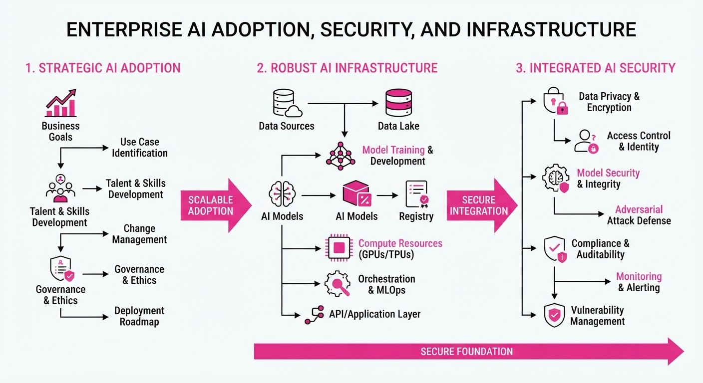
Generative AI has transitioned from experimental use to a core weekly habit for 51% of users in surveyed markets. As adoption scales, the industry is bifurcating into two critical needs: securing the "agentic" frontier—where AI agents autonomously interact with enterprise systems—and securing the underlying hardware supply.
- Usage Surge: Weekly generative AI usage has jumped from 34% to 51% year-over-year.
- Agentic Risk: With agents now executing tasks autonomously, platforms like WitnessAI’s Agentic Control are launching to provide runtime governance.
- Supply Bottleneck: Memory manufacturers are reporting "sold out" status for HBM through 2029, signaling that hardware scarcity remains the primary constraint on AI scaling.
🏭 Industry Angle: The "agentic era" is shifting the focus from model performance to runtime security, while the memory market is moving toward long-term, capacity-guaranteed supply models to survive the compute crunch.
2. Key Details & Timeline
- Weekly AI Usage: Rose from 34% (2025) to 51% (2026) across six major markets.
- SK Hynix Capacity: Over 50% of 2027–2028 production capacity is already locked into long-term supply agreements (LTAs).
- Agentic Governance: WitnessAI launched its Agentic Control platform on 2026-06-17 to monitor and restrict AI agent interactions with enterprise tools and Model Context Protocol (MCP) servers.
- Memory Demand: SK Hynix expects HBM demand to exceed supply through at least 2030.
3. By the Numbers
| Metric | Before | After | Delta / Notes |
|---|---|---|---|
| Weekly GenAI Usage | 34% (2025) | 51% (2026) | +17 percentage points |
| Daily GenAI Usage | 16% (2025) | 28% (2026) | +12 percentage points |
| SK Hynix LTA Clients | 10 (Q2 2026) | 14 (Q3 2026) | +4 customers |
| SK Hynix Op. Profit | KRW 60.38T* | KRW 83.33T | +38% (Q2 to Q3 2026) |
\Estimated based on reported 38% growth from Q2 to Q3 2026.*
4. Impact & What to Watch
- Security Paradigm Shift: Traditional security (keywords/rules) is failing against agentic workflows; expect a rapid pivot toward "intent-based" and "runtime" governance.
- Infrastructure Tiering: The "have/have-not" split in AI hardware is widening, as hyperscalers lock up multi-year HBM supply, leaving smaller players to compete for spot-market pricing.
- Watch Next: Monitor whether HBM4 shipments in Q4 2026 successfully alleviate the supply bottleneck or if the "sold out" status extends further into 2030.
- Watch Next: Observe the adoption rate of the Model Context Protocol (MCP) as a standard for agent-to-tool communication.
Engineering blog · ML6 (via ElevenLabs ecosystem) · Published: 2026-10-19 · salience 9.5/10
Why it matters: Provides a concrete case study on migrating to agentic voice infrastructure with measurable performance improvements.
Read the post: ML6 (via ElevenLabs ecosystem)
Rebuilding Voice Agents: A One-Week Migration to Managed Infrastructure
1. What They Built & Why
ML6 migrated their internal voice receptionist bot from a custom, open-source stack (LiveKit) to the ElevenAgents platform. The goal was to reduce the engineering overhead of maintaining complex, multi-component voice pipelines. In a single 40-hour work week, they achieved significant performance gains: early hang-ups dropped from 41% to 21%, and successful request fulfillment increased from 36% to 71%.
2. How It Works (the practical bits)
- Platform Abstraction: ElevenAgents handles the orchestration of speech recognition, LLM reasoning, speech synthesis, and telephony, replacing the need for manual component integration.
- Architect Tooling: The team utilized the "Architect" feature, which allows for agent definition in plain language and provides automated analysis of call logs to propose system improvements.
- Tuned Realtime Models: They leveraged ElevenLabs' "Realtime" speech-to-speech models, which are pre-tuned for conversational nuances like turn-taking, interruption recovery, and variable pause handling.
- Versioned Iteration: Changes are saved as versioned drafts, enabling the team to test, simulate, and pilot updates before pushing them to production.
3. Takeaways You Can Apply
- Prototype Before Committing: If building a custom voice stack, run a one-week prototype on a managed platform first to establish a performance baseline before investing months in custom infrastructure.
- Focus on Orchestration, Not Models: The primary bottleneck in voice agents is rarely the model quality; it is the "judgment calls" (e.g., latency, interruption handling, and conversational flow). Prioritize platforms that handle these nuances out of the box.
Engineering blog · NVIDIA · Published: 2026-10-15 · salience 9.0/10
Why it matters: Essential technical guidance for managing memory and compute constraints when serving large generative models across multi-GPU setups.
Read the post: NVIDIA
Multi-GPU Model Serving with NVIDIA Dynamo-Triton
1. What They Built & Why
NVIDIA addressed the challenge of serving massive generative models that exceed the memory and compute capacity of a single GPU. They integrated TensorRT multi-device inference into Dynamo-Triton (release 26.07), allowing a single model instance to span multiple GPUs. This eliminates the need for clients to manually coordinate distributed GPU ranks, providing a unified gRPC endpoint for complex, long-sequence workloads like video generation.
2. How It Works (the practical bits)
- Unified Interface: A single
KIND_MODELinstance manages multiple GPUs, handling per-rank execution contexts, CUDA streams, and NCCL communicators internally. - Distributed Execution: The system uses Ulysses context parallelism to shard massive token sequences (e.g., 44,160 tokens in Cosmos 3 Nano) across up to eight GPUs.
- Compilation: The distributed graph is compiled directly into the TensorRT plan, ensuring that the model handles its own distributed communication during inference.
- Performance: For the Cosmos 3 Nano model, this approach reduced end-to-end generation latency from 156.6s (single GPU) to 34.2s (eight GPUs), a 4.58x speedup.
3. Takeaways You Can Apply
- Abstract Complexity: Move rank and communicator lifecycle management out of the client and into the model server to keep your application interface stable.
- Trade Resources for Latency: Use multi-GPU serving to prioritize shorter request times for latency-sensitive media workflows, but remember to evaluate cost-per-request and throughput against your specific SLOs.
- Identify Bottlenecks: Focus multi-GPU acceleration on the most compute-intensive stages—in this case, the transformer block, which accounted for 93.4% of single-GPU generation time.
Engineering blog · Google DeepMind · Published: 2026-09-24 · salience 8.5/10
Why it matters: Offers a sophisticated multi-agent approach to solving the critical production challenge of identity consistency in long-form video.
Read the post: Google DeepMind
Co-Director: Multi-Agent Orchestration for Long-Form Video
1. What They Built & Why
Google DeepMind introduced Co-Director, a hierarchical multi-agent framework designed to solve the "identity drift" and cascading failure problems inherent in linear AI video pipelines. By treating long-form storytelling as a global optimization task rather than a sequence of independent prompts, the system automates narrative planning, visual memory, and closed-loop refinement to produce consistent, minutes-long video content.
2. How It Works (the practical bits)
- Orchestration Layer: Uses a Multi-Armed Bandit (MAB) algorithm to balance exploring creative strategies against exploiting proven configurations (e.g., narrative mode, aesthetic archetype).
- Persistent Memory (CANVAS): Maintains a state-tracking module for characters, locations, and objects, retrieving visual anchors to ensure consistency across non-contiguous shots.
- Autoregressive Generation (A²RD): A training-free architecture that generates video segments while conditioning on previous segments to maintain temporal and geometric stability.
- Closed-Loop Evaluation (VQQA): Uses a Vision-Language Model (VLM) to generate questions about visual fidelity, using the answers as natural-language feedback to trigger prompt rewrites before final assembly.
3. Takeaways You Can Apply
- Shift from Linear to Global: Treat multi-shot generation as a global optimization problem where a "judge" model scores the final output to factor rewards back into the planning layer.
- Decouple State from Pixels: Use a dedicated memory module (like CANVAS) to track entity states independently of the generation model, preventing "feature drift" in long-form narratives.
- Implement Factored Prompting: Disentangle high-level creative intent into specific axes (e.g., strategy, mode, archetype) to allow agents to iterate on components without discarding the entire generation.
Engineering blog · Artificial Intelligence News (Engineering Deep Dive) · Published: 2026-09-30 · salience 8.0/10
Why it matters: A high-level engineering synthesis of production-grade patterns like context engineering and MCP that are vital for modern AI systems.
Read the post: Artificial Intelligence News (Engineering Deep Dive)
Architecting Robust Production AI Systems
1. What They Built & Why
The engineering team at Artificial Intelligence News outlines a shift from fragile, single-prompt loops to resilient, production-grade systems. As frontier models become commoditized, the competitive advantage has migrated from simply accessing a model to building the surrounding "systems engineering" stack—specifically focusing on orchestration, context management, and rigorous evaluation to ensure reliability in real-world applications.
2. How It Works (the practical bits)
- Context Engineering: Moves beyond basic prompts by dynamically injecting highly relevant, structured data into the model’s context window to improve task precision.
- Tool Access via MCP: Implements the Model Context Protocol (MCP) to provide agents with secure, permission-gated access to external tools, enabling them to perform actions rather than just generating text.
- Evaluation-First Workflows: Shifts focus from "getting a response" to evaluation-based development, where performance is measured against completed tasks rather than raw output quality.
- Routing & Modularity: Uses architectural routing to keep models replaceable, allowing teams to swap underlying LLMs without re-engineering the entire application pipeline.
3. Takeaways You Can Apply
- Prioritize Architecture over Models: Invest in robust RAG, memory, and structured data pipelines; these components provide more long-term value than any single model version.
- Design for Tooling: Standardize how agents interact with your systems using protocols like MCP to maintain tight security and granular control over agentic actions.
- Measure Outcomes, Not Tokens: Optimize your AI bill by shifting metrics from per-token cost to cost-per-outcome, discouraging wasteful usage and favoring model-appropriate tasks.